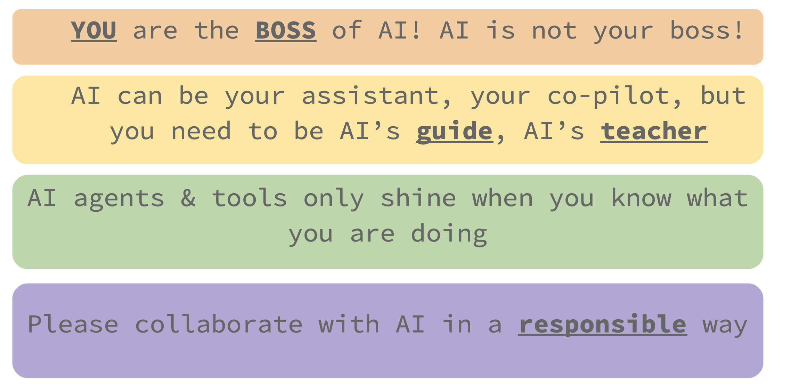

💠Chapter 5: Prompt Engineering#

1. What is AI?#
1.1 Definition from Experts#
Definition from Dr. Joy Buolamiwini [Buolamwini, 2023]:
“Artificial Intelligence is the ongoing quest to give computers the ability to perceive the world (that is, make meaning of visual, aural, and other sensory inputs), to make judgments, to generate creative work, and to give them the ability to communicate with humans.”
Definition from Drs. Stuart Russell and Peter Norvig [Russell and Norvig, 2020]:
{kind=link}
More Definitions:
{kind=link}
*Image credit: [Russell and Norvig, 2020]
💡 Take home message: The definitions of AI we listed above are just for your reference. Ultimately, YOU define what is AI for yourself!
2. The Power of System Prompts#
3. Prompt Engineering Techniques#
3.1 Think and plan#
3.1.1 🧠Ask AI to Think Step by Step#
Make the AI show its work like in math class!
Examples:
“Step by step, how do I make a peanut butter sandwich?”
“Walk me through the process of solving 2x + 5 = 15 step by step”
3.1.2 ⏰ Give AI Time to Think#
Tell the AI it’s okay to take its time
Examples:
“Take your time and think carefully before answering”
“Use the maximum amount of thinking. It’s better to think too much than too little”
“Don’t rush - I want your best answer”
3.1.3 🤔 Plan before execute#
Prompt AI to plan the thinkng process or workflow before it writes any code
Examples:
“I wish to generate images of otter doing data analysis. Give me a few ideas about how the images should look like.†–> Select the description that you like, then ask it to generate images
“Let’s plan the data analysis workflow first, from raw data to stats analysis and visualization.”
3.1.4 ğŸ Give AI a Persona (Role-Play!)#
Make the AI pretend to be someone specific!
Examples:
“You are a friendly pirate captain. Teach me about ocean currents!”
“You are a wise wizard. Explain photosynthesis using magical terms”
“You are an expert data scientist with 20 years of experience”
3.2 Structured Communication#
3.2.1 📋 Use Structured Formats#
Ask for answers in organized ways!
JSON Format Example:
"Give me information about dogs in this JSON format:
{
'name': 'Golden Retriever',
'size': 'Large',
'personality': 'Friendly and energetic',
'good_with_kids': true
}"
List Format Example:
“Give me 5 facts about space as a numbered list”
“Create a bullet point summary of this article”
3.2.2 🤓 Ask Questions in JSON Format#
AI loves structures!
Example:
{
"task": "book recommendations",
"topic": "prompt engineering",
"audience": "kids 10-15 years old who started learning about data science",
"output_format": "A list of book followed by a one sentence summary for each book"
}
3.3 Examples & alternatives#
3.3.1 📚 Provide Clear Examples#
Show the AI exactly what you want!
Example:
"Write animal facts in this format:
🐘 Elephants: These gentle giants can weigh up to 6 tons and have amazing memories!
🦁 Lions: Known as the king of the jungle, they actually live in grasslands!
Now do the same for: dolphins, penguins, and butterflies"
3.3.2 🔠Ask for Explanations#
Don’t just get answers - understand the “why”!
Examples:
“Don’t just tell me the answer - explain why 2+2=4”
“Explain your reasoning behind this recommendation”
When you ask AI to explain and reflect on its own answer, it tend to correct the mistakes it makes if there is any.
3.3.3 🳠Use Fun Analogies#
Make complex things simple with comparisons!
Examples:
“Explain DNA using LEGO building blocks”
“Compare the internet to a giant library”
3.3.4 🨠Ask for Alternatives#
Get multiple options to choose from!
Examples:
“Show me 3 different ways to solve this math problem”
“Give me 5 creative project ideas about butterflies”
3.4 Communication Tips#
3.4.1 📠Set Clear Constraints#
Give the AI specific rules to follow!
Examples:
“Explain this using only words a 10-year-old would know”
“Write a story that’s exactly 100 words”
3.4.2 😊 Be Polite (It Really Helps!)#
Good manners work with AI too!

Examples:
“Please explain what stars are made of”
“Could you help me understand fractions?”
“Thank you! Could you give me one more example?”
3.4.3 🯠Be Super Specific#
The more details you give, the better the answer!
Examples:
⌠“Help with science”
✅ “I’m studying the water cycle for 6th grade science. Can you explain evaporation in simple terms?”
⌠“Write a story”
✅ “Write a 200-word adventure story about a kid who discovers a secret door in their school library”
3.5 Context Management#
3.5.1 🤯 Start New Chats for Big Tasks#
AI can be overwhelmed by large amounts of information & get lost if the conversation gets too long
Start a new chat when your conversation gets really long (20+ messages) to keep the AI focused!
3.5.2 🏗️ Build on Previous Answers#
Keep the conversation going!
Examples:
“That’s great! Now can you give me a harder example?”
“Can you make this explanation simpler?”
“I understand that part. What about…?”
3.6 ✨ The Magic Formula#
Context + Clear Request + Specific Format + Politeness = Amazing Results!
🯠Remember:
Start fresh: New chat for new big topics
Be patient: Good prompts take practice
Experiment: Try different approaches
Have fun: The best learning happens when you’re enjoying yourself!
Happy prompting, future AI wizards! 🧙‍♂️✨
4. Verifying AI Code Quality#
4.1 🔠Why Check AI Code?#
Because even AI makes mistakes sometimes! Here’s how to be a code detective 🕵️‍♂️
Just like you double-check your math homework, you should double-check AI code! Even smart AI can make tiny mistakes or misunderstand what you wanted.
4.2 Verification Methods#
4.2.1 🤖 Ask Two Different AI Models#
Get a second opinion, just like asking two teachers!
LMArena would be a great platform to do so!
How to do it:
Ask ChatGPT: “Create R code to make a bar chart of favorite ice cream flavors”
Ask Claude: “Create R code to make a bar chart of favorite ice cream flavors”
Compare the answers - are they similar? Do they both make sense?
4.2.2 🧪 Create Test Data#
Make fake data to see if your code actually works!
Step 1: Ask AI to create simple test data
"Create a simple data frame in R with 5 students, their names,
ages (between 10-15), and favorite colors. Call it 'test_data'"
Step 2: Test your code with this data
4.2.3 ğŸ Team Up Two AI Models#
Have one AI write code, another AI check it!
The Process:
AI #1 (The Coder): Write the code
AI #2 (The Checker): Review and explain the code
4.2.4 🔬 Simple Testing Tricks#
Method 1: The “Does it Run?†Test Copy the code and see if it runs without errors!
Method 2: The “Does it Make Sense?†Test Ask yourself logical questions about the expected output
Method 3: The “Explain It Back†Test Ask the AI: “Explain what this code does line by line”
4.3 💼 Professional Testing (Advanced Concept)#
Professional data scientists write functions and create unit tests to thoroughly test every piece of code they write.
What are unit tests? 🧪
Small tests that check if each part of your code works correctly
Professional data scientists write these tests to catch bugs before they cause problems
Test-Driven Development: Write tests before writing the actual code!
💡 Professional Tip: Real data scientists spend a large amount of their time writing tests! It saves huge amounts of time by catching errors early.
5. Key Messages#
5.1 👑 Remember you are the boss!#

The key message I want to emphasize is that:
⚡️ You want to be the boss of AI, not the other way around.
AI can only be your copilot, but you are the main pilot who needs to be ready to take over manual control at any time if the plane ✈️ is not flying in the right direction.
Here’s the good news and the bad news:
😱 The bad news: From now on, it’s all up to you. Nobody else can watch over your shoulder all the time.
🉠The good news: It is all UP TO YOU! You have full control of what kind of data scientist you want to be in the next year.
Taking shortcuts might feel like you’re moving fast in the short term 🏃‍♂️, but you could get lost in the woods 🌲🤷‍♀️ and end up at the wrong destination. Learning about the fundamentals will allow you to shine hundreds of times brighter ✨ when you collaborate with AI.
I’m a very heavy user of AI, I try different tools for fun, and integrate AI into every aspect of my workflow. We can learn and explore together, holding each other accountable for collaborating with AI in a responsible way.
{kind=link}
5.2 💬✨ Code is cheap, show me the talk.#
The famous quote “Talk is cheap. Show me the code†💻 by Linus Torvalds in 2000 reflected the era when coding was the bottleneck—when having the technical skills to implement ideas was the scarce resource.
But in 2025, with AI as our coding companion 🤖, the paradigm has shifted:
💡 “Code is cheap, show me the talk.”
In the age of AI:
ğŸ Code generation is becoming commoditized - AI can write code from simple prompts
💠Communication and problem-solving skills are now the differentiators
🤔 The ability to articulate problems, requirements, and solutions clearly becomes your superpower
🯠Understanding what to build and why matters more than just knowing how to build it
Your ability to talk through problems, explain concepts, and communicate with both humans and AI will determine your success in the AI era. 🚀

Note: This image was generated using OpenAI GPT-5